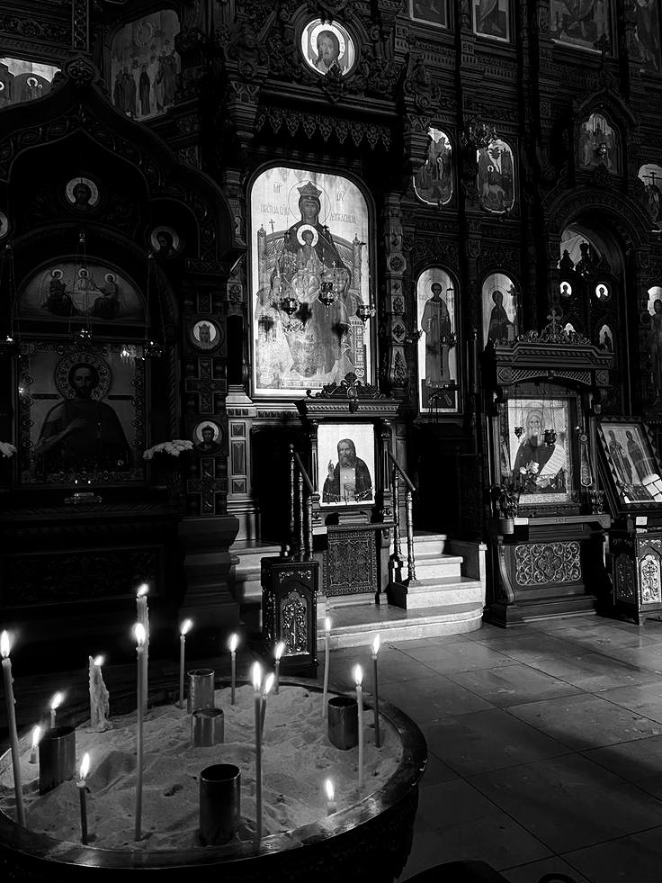
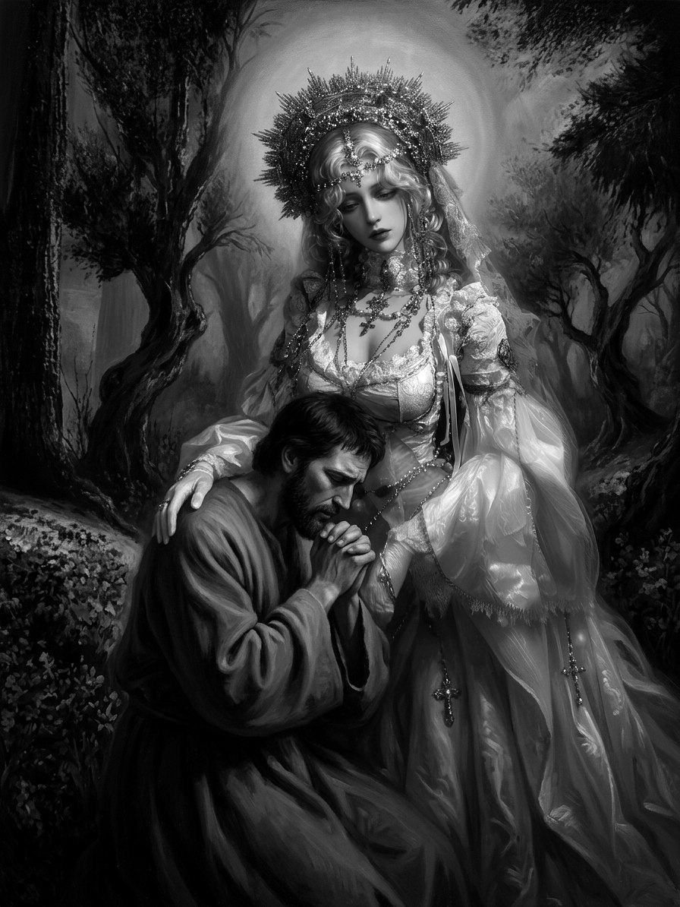
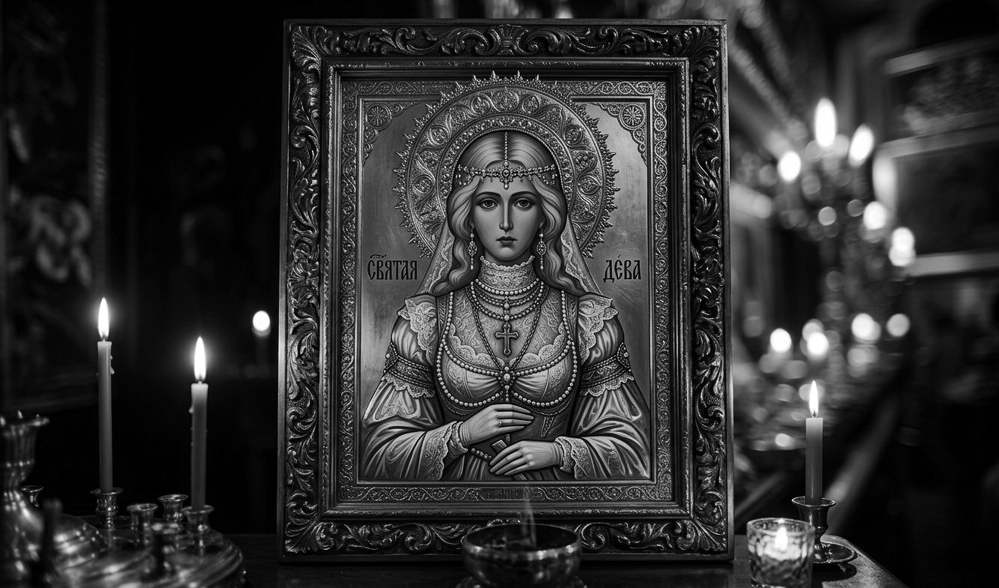
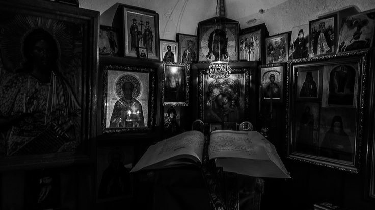
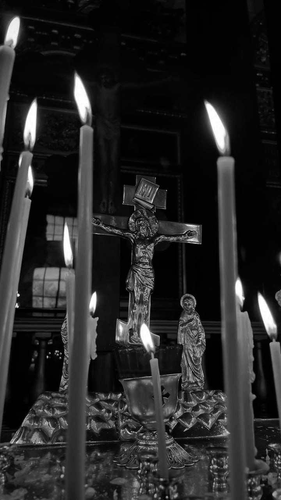

Священное писание
Поминальные свечи



Я помню её до мельчайших деталей. Иногда мне кажется, что память — это единственное, что у меня осталось, и я держусь за неё изо всех сил, прокручиваю в голове снова и снова, чтобы не забыть ни одной чёрточки, ни одного отблеска света в её волосах. Она стояла у окна в тот последний вечер, и закатное солнце падало на неё мягкими золотыми лучами, подсвечивая каждый локон. Её волосы были длинными, ниже плеч, уложенными в аккуратные золотисто-блондные кольца, которые обрамляли лицо и тяжёлыми, плотными завитками спадали на плечи. Я никогда не видел, чтобы кто-то носил такие сложные причёски в обычной жизни, но для неё это было естественно, это была часть её самой, её благородной, почти неестественной красоты, которую она несла с удивительной лёгкостью.
Над головой возвышался декоративный венец — большой, тёплого золотого оттенка, с мелкими украшениями, бисером и крохотными камнями, которые искрились при малейшем движении. От венца спускалась тонкая вуаль из кружева, полупрозрачная, почти невесомая. Она колыхалась от дыхания и ложилась на плечи мягкой дымкой, и мне всё время хотелось протянуть руку и коснуться этой ткани. Но я не смел. Она казалась мне чем-то неземным, чем-то, что я мог потерять в любой момент, если сделаю неосторожное движение. Эта вуаль скрывала её черты лишь отчасти, делая лицо ещё более загадочным и прекрасным, и я помню, как сквозь неё проступали очертания её губ, когда она говорила. Она говорила тихо, но каждое слово ложилось мне в самое сердце.
[03.05.2026 15:52] 疼痛虽强, 但你的眼神更强大.:Шею охватывал высокий кружевной воротник, жёсткий и изящный одновременно. Он подчёркивал её осанку, заставлял держать голову выше, и от этого её фигура казалась ещё более хрупкой и царственной. Поверх воротника лежало несколько длинных цепочек с крестами, медальонами и какими-то мелкими подвесками, смысл которых я никогда не спрашивал. Они свободно драпировались по груди, позвякивали при ходьбе, и этот звук до сих пор иногда мерещится мне в тишине пустых комнат. Я просыпаюсь от него среди ночи, но рядом никого нет, и только сердце колотится от тоски такой силы, что трудно дышать.
Корсетная часть платья была кремовой, из атласа, с кружевной отделкой по краям. Я помню, как туго он стягивал её талию, делая фигуру почти неестественно изящной, как линии швов подчёркивали грудь и бока, как блестела ткань в закатном свете. Этот корсет был частью её, он держал её прямо, не давал сломаться, и она носила его так, будто он был даром свыше. Рукава её платья были широкими, объёмными, из полупрозрачной органзы, схваченные у запястий кружевными манжетами. Когда она двигала руками, они плыли по воздуху, и я видел, как сквозь ткань просвечивают её тонкие пальцы, затянутые в лёгкие перчатки. Одна рука всегда была чуть согнута у талии — изящная, благородная поза, исполненная такого достоинства, какого я не встречал больше ни в ком.
Юбка была многослойной, и верхние слои из полупрозрачной ткани переливались в лучах солнца, а нижние лежали тяжёлыми складками. По подолу шли золотые цепочки, жемчужины, подвески, и всё это двигалось при каждом её шаге, создавая тихую, небесную музыку. Помню, как я смотрел на этот наряд и думал, что никогда не видел такой роскоши вблизи. Её платье было целым миром, полным сокровищ и тайн. Оно сияло. Везде, куда падал взгляд, блестело золото — цепочки, кресты, бисер, металлическая вышивка на корсаже.
Я смотрел на неё и не мог наглядеться. Она была прекрасна. И когда она ушла, этот свет погас. Теперь я храню её образ в памяти, как драгоценность, которую боюсь потерять. Я пересказываю его себе перед сном, чтобы не забыть. И больше всего на свете я хочу, чтобы однажды она снова появилась передо мной такой, какой я запомнил её в тот последний миг. С золотыми локонами, с вуалью, колышущейся от дыхания, с мягкой улыбкой на губах, обращённой только ко мне. Не знаю, заслужил ли я это. Но я жду. И буду ждать, сколько бы времени ни прошло.
Я скучаю, моя любовь...
Леон Дюмон

И была в те дни в народе великая смута, ибо сердца людские ожесточились, а вера их истончилась, как ветхая ткань. Никто не внимал речам жрецов, и храмы стояли пусты, и голоса молящихся не возносились к небесам. Тогда собрались старейшие из жриц и держали совет меж собою, говоря: «Народ наш блуждает во тьме, и нет ему утешения. Надобно избрать ту, что станет светочем для заблудших, ту, чья чистота растопит лёд в очерствевших душах».
И пошли они по городам и весям, разыскивая деву непорочную, чей лик был бы кроток, а сердце — исполнено любви ко всему живому. Долго искали они и наконец пришли в малый дом на окраине селения, где жила юная дева. Волосы её были длинны и темны, спадали ниже плеч прямыми прядями, а кожа хранила отпечаток солнца. [03.05.2026 15:52] 疼痛虽强, 但你的眼神更强大.: Глаза её, карие и глубокие, смотрели на мир с тихой мудростью, не свойственной её возрасту. Она не знала зла и не держала обид, помогала немощным и кормила голодных, не прося ничего взамен. Жрицы узрели в ней благодать истинную и сказали ей: «Избрана ты, дабы стать святой заступницей пред лицом Всевышнего. Через тебя народ обретёт прощение и веру».
Дева смутилась и опустила взор, ибо не искала она славы и не желала возвышения над другими. Но сердце её, полное сострадания к страждущим, не позволило ей отказаться. «Да будет так, как угодно Господу и вам, служительницы Его», — ответила она смиренно и склонила голову, принимая судьбу свою, ещё не ведая, какою ценою будет куплено спасение народа.
Жил в том же селении юноша по имени Леон Дюмон. Был он ремесленником искусным, и руки его умели создавать вещи прекрасные из простого дерева и камня. Но прекраснее всех творений его была любовь, которую питал он к избранной деве. С той поры, как впервые увидел он её у колодца на закате дня, сердце его уже не принадлежало ему. Каждый раз, встречая её взгляд, он чувствовал, как немеет язык его, а слова, что он готовил дни напролёт, рассыпались прахом.
Он приходил к её дому под предлогом починить покосившуюся дверь или подправить протекающую крышу. Он оставлял скромные дары у порога — то пучок полевых цветов, то свежеиспечённый хлеб, то малую иконку, вырезанную собственными руками. Но сказать о главном он всё не решался, откладывая признание на завтра, на послезавтра, на тот день, когда наберётся достаточно смелости. А дни те утекали, как вода сквозь пальцы, и Леон не ведал, что времени ему отпущено куда меньше, чем он мнил.
Когда же узнал он, что деву избрали жрицы для великого служения, грудь его стеснилась от предчувствия беды. Он хотел броситься к ней, упасть на колени и сказать наконец то, что жгло его изнутри долгие месяцы. Хотел просить её остаться, отказаться от избрания, выбрать жизнь простую и земную — с ним, с Леоном, который любил её больше самой жизни. Но ноги его словно приросли к земле, а голос пропал, и он лишь стоял в толпе, глядя, как уводят её жрицы в белых одеяниях. Она обернулась на мгновение, нашла его глазами в море лиц и едва заметно улыбнулась — грустно и тепло. Эта улыбка навсегда врезалась в его память, став самой горькой и самой драгоценной из всех воспоминаний.
И свершилось предначертанное. В день священного обряда облачили деву в белые ризы, расшитые серебряными нитями, и возложили на голову её венок из белых лилий. Она шла к алтарю босая, и народ расступался пред нею, падая на колени. Жрицы возносили молитвы, и голоса их звучали торжественно и скорбно одновременно. Сама же дева хранила молчание, и лишь губы её едва шевелились, шепча слова последней молитвы — не за себя, но за всех, кто пришёл смотреть на её исход.
Ритуальное принесение в жертву было чисто и строго, как того требовал древний церковный чин. Никто не услышал от неё ни крика, ни стона. Она приняла смерть с тем же смирением, с каким жила, и душа её отделилась от тела легко, словно лепесток, подхваченный ветром. И в тот самый миг, когда сердце её остановилось, небеса разверзлись и пролился на землю благодатный свет.
Народ, потрясённый увиденным, уверовал вновь, и храмы наполнились молящимися.
Ныне же она пребывает в чертогах небесных святым духом, помогая тем, кто взывает к ней в час нужды. Она слышит каждую молитву, каждую просьбу о прощении, и ходатайствует пред Господом за грешников неразумных.
[03.05.2026 15:52] 疼痛虽强, 但你的眼神更强大.:Леон Дюмон не женился и не познал иной любви до конца дней своих. В доме его, над малым алтарём, стоит икона с её ликом — тем самым, что он вырезал когда-то дрожащими от любви руками. Каждый вечер он зажигает пред образом свечу и шепчет молитву, ту самую, единственную: «Святая дева, прости, что не сказал тебе главного. Прости, что не уберёг. Будь со мною в час мой последний, как я с тобою — в каждый час земного бытия».
А она, взирая на него из горних высей, чувствует, как сжимается её бестелесное сердце от боли невыразимой. Боль эта — не за себя, но за него, оставшегося там, в мире живых, пленником своей невысказанной любви. Она видит каждую его слезу, слышит каждый вздох и тянется к нему незримым лучом света, но не может коснуться, ибо разделяет их великая пропасть между жизнью вечной и земным существованием. И всё же она верит, искренне и глубоко, что страдание это не напрасно. Что её жертва и его верность однажды помогут людям простить всё — и предательство, и жестокость, и неверие. Она ждёт того дня, когда все долги будут уплачены и все грехи отпущены. И в этом ожидании, полном тихой, святой печали, пребывает она вечно, храня в своём призрачном сердце и первую любовь, и последнюю.
